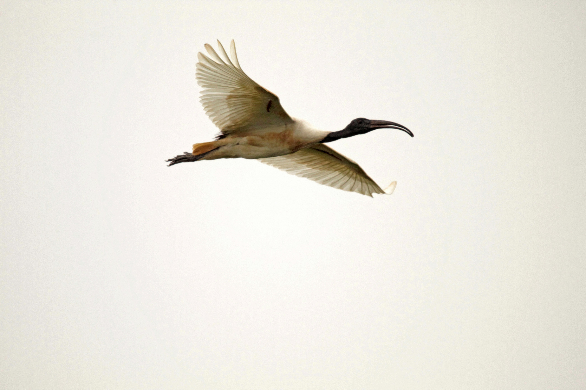

The Black-Headed Ibis is a large wading bird with a mostly white body, a bare black head and neck, and long dark legs. It is commonly found in wetlands, marshes, flooded fields, riverbanks, and agricultural areas, where it searches for prey by probing mud and soft ground with its long, curved bill. It feeds on a wide range of aquatic and terrestrial animals and may forage both in shallow water and on dry ground.